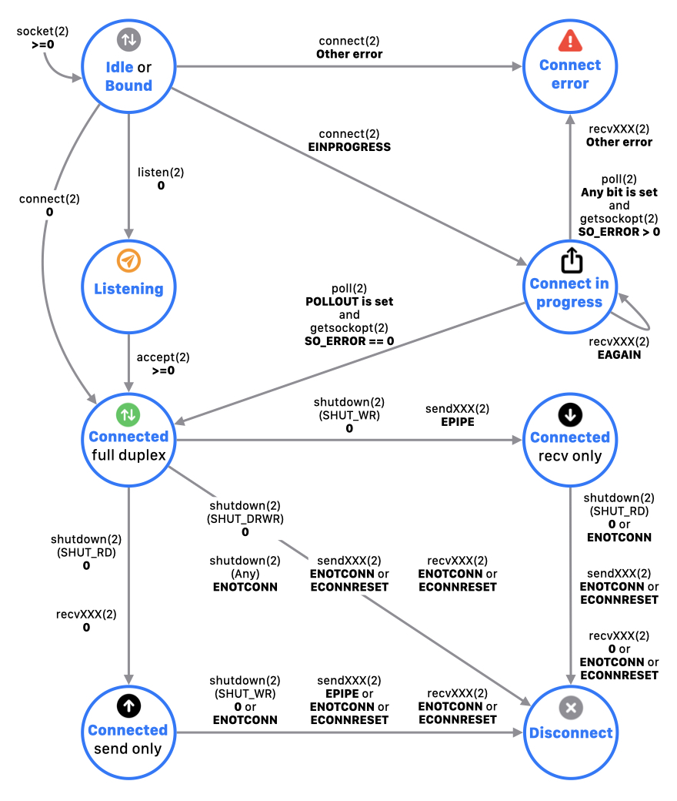

Chapter 1. Socket Simulator
SOCTEST - USER'S GUIDE
In this chapter, it describes about the function of Socket Simulator's initial view (the "Top View").
In this view, creates and deletes a socket. And, polls, lists sockets.
Creation a socket
With tapping socket, moves to the next view. You select protocol family, socket type, and protocol in the next view, then a new socket is created with calling socket(2).
The created sockets are listed in Top View.
[Note]
No upper limit on the number of sockets that can be created.
Deletion a socket
With swiping left a row, close(2) is called to close the socket, then removes from the list.
Polling for sockets
With pulling down Top View, you can poll the status for all sockets.
In this polling, it calls poll(2) with POLLIN|POLLPRI|POLLOUT as request events and 0 seconds as timeout.
Listing sockets
It describes how to confirm the information and the status of socket in the list.
Icon
It changes depending on the status of socket.
| Icon | Description |
|---|
| Role | | Server socket
Socket is waiting a connection request with calling listen(2).
Or, socket was created with accept(2). |
 | Client socket
Other than those above. |
I/O mode
(*1) | | Non-blocking mode
The file status flag of socket was set to O_NONBLOCK with fcntl(2). |
| Blocking mode
Other than those above. |
Connection
status (*2) | | Not connected
Status is Idle. Or, the socket is bound status with calling bind(2). |
| Listening
Waiting for connection request with calling listen(2). |
| Connect in progress
Waiting for completion of connection for the non-blocking socket. |
| Connect error
Error occurred in connection for the socket. |
| Connected (in full duplex)
Completion connect for the socket. Or, the socket was created with accept(2). |
| Connected
Receiver side of full duplex was shut down. |
| Connected
Sender side of full duplex was shut down. |
| Disconnect
All of full duplex were shut down. |
*1 When the app setting DESCRIPTION is enabled, the icon of I/O mode is displayed.
*2 When the app setting AUTO MONITORING is enabled, the icon of connection status is displayed with SOCK_STREAM socket.
Socket address (Upper row)
If socket assigned an address, Src Address is displayed.
But, excepts a listening socket.
In Address, the pair of IP address and port (if PF_INET), or UNIX domain path (if PF_UNIX) is displayed.
Socket title
A title depending on the status of socket is displayed.
| Title | Status |
|---|
| INET domain socket | Initial state of AF_INET socket |
| UNIX domain socket | Initial state of AF_UNIX socket |
| Dst Address | Socket is connected. |
| Src Address | Socket is listening.
Or, SOCK_DGRAM socket is assinged an address. |
Socket parameters (Lower row 1)
The following informaiton is displayed.
When the app setting DESCRIPTION is enabled, this row is displayed.
- File discriptor number
- Protocol family
- Socket type
- Protocol (except specifying default 0)
Socket connection status (Lower row 2)
Connection status of the socket are displayed. This status interlocks the above icon.
When the app setting AUTO MONITORING is enabled, this row is displayed with SOCK_STREAM socket.
| Connection status | Icon | Description |
|---|
| Idle | | Initial status. |
| Bound | An address is bound to the socket. |
| Listening | | Waiting for connection requests. |
| Connect in progress | | Waiting for completion of connecting. |
| Connect error | | Error occurred in connecting process.
The following error value is displayed as an additional information.
Err#<errno number> <errno name> |
| Connected | | Socket is connected. |
|
|
| Disconnect | | Socket is disconnected. |
Connection status transition diagram is as below.

TCP state (Lower row 3)
The state of TCP connection associated with a socket is displayed.
When the app setting AUTO MONITORING is enabled, this row is displayed with TCP socket (AF_INET socket of SOCK_STREAM type).
This state is displayed based on the values of parameter tcpi_state obtained TCP_CONNECTION_INFO option.
See RFC#793 or internet public site for details.
| tcpi_state | State |
|---|
| 0 | CLOSED |
| 1 | LISTEN |
| 2 | SYN_SENT |
| 3 | SYN_RECEIVED |
| 4 | ESTABLISHED |
| 5 | CLOSE_WAIT |
| 6 | FIN_WAIT_1 |
| 7 | CLOSING |
| 8 | LAST_ACK |
| 9 | FIN_WAIT_2 |
| 10 | TIME_WAIT |
TCP traffic (Lower rows 4 - 6)
The amount of incoming data and outgoing data in packet transfer via a socket are displayed.
When the app setting AUTO MONITORING is enabled, it is displayed with TCP socket other than CLOSED, LISTEN status.
The value of the following parameters obtained TCP_CONNECTION_INFO option is displayed.
| Traffic | Parameter | Description |
|---|
| RX | tcpi_rxbytes
tcpi_rxpackets | Data size in incoming traffic (bytes / packets) |
| TX | tcpi_txbytes
tcpi_txpackets | Data size in outgoing traffic (bytes / packets) |
| Retransmit | tcpi_txretransmitbytes
tcpi_txretransmitpackets | Retransmitted data size in outging traffic (bytes / packets) |
TCP RTT (Lower row 7)
The RTT (milisecond accuracy) in TCP communication are displayed.
When the app setting AUTO MONITORING is enabled, it is displayed with TCP socket other than CLOSED, LISTEN status.
The value of the following parameters obtained TCP_CONNECTION_INFO option is displayed.
| Round Trip | Parameter | Description |
|---|
| Average RTT | tcpi_srtt | Average time of RTT (seconds) |
| Recent RTT | tcpi_rttcur | Most recent time of RTT (seconds) |
Events bitmask (Lower row 8)
The bit mask of response events by polling are displayed.
If there are some events, the corresponding event bit is highlighted.
This information is utilized due to confirm the presence of incoming data, error, etc.
[Note]
Three types of polling are available in this app.
Copyright © 2021 manabapp. All rights reserved.
English |
Japanese